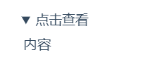

官方说明文档
Hexo 使用
安装
确保电脑安装了Git 和 Npm ，然后执行下方命令
$ npm install -g hexo-cli
npm 指定代理的方式，后面加上
–proxy=http://127.0.0.1:1080
在指定文件夹初始化
> $ hexo init <folder>
> $ cd <folder>
> $ npm install
文件
- _config.yml : 网站的配置信息
- package.json: 应用程序的信息
- scaffolds: 模版文件夹。新建文章时，Hexo会根据scaffold来建立文件
- source: 资源文件夹是存放用户资源的地方。除 _posts 文件夹之外，开头命名为 _ (下划线)的文件 / 文件夹和隐藏的文件将会被忽略。Markdown 和 HTML 文件会被解析并放到 public 文件夹，而其他文件会被拷贝过去。
- themes: 主体文件夹，Hexo会根据主体来生成静态页面
配置文件
_config.yml
指令
init
hexo init [folder]
新建一个网站。如果没有设置 folder ，Hexo 默认在目前的文件夹建立网站。
new
$ hexo new [layout] <title>新建一篇文章。如果没有设置 layout 的话，默认使用 _config.yml 中的 default_layout 参数代替。如果标题包含空格的话，请使用引号括起来。
$ hexo new –path about/me “about me”
文章存放的默认目录为： source/_posts
$ hexo new page –path contact/me “contact me”
加了 page 参数后 ， 会在 soruce 目录下面 直接创建 目录。注意，后面的“contact me”不能缺少
generate
生成静态文件
$ hexo generate
等效于
$ hexo g
publish
发表草稿
$ hexo publish [layout] <filename>server
$ hexo server
启动服务器。默认情况下，访问网址为： http://localhost:4000/
加入 -p 选项可以重置端口
deploy
部署网站
$ hexo deploy
render
$ hexo render
[file2] …
渲染文件
-o ： 设置输出路径
migrate
$ hexo migrate
从其他博客系统迁移内容
clean
$ hexo clean
清除缓存文件 (db.json) 和已生成的静态文件 (public)。
在某些情况（尤其是更换主题后），如果发现您对站点的更改无论如何也不生效，您可能需要运行该命令。
list
$ hexo list
列出网站资料
选项
安全模式
$ hexo –safe
在安全模式下，不会载入插件和脚本。当您在安装新插件遭遇问题时，可以尝试以安全模式重新执行。
写作
布局（Layout）
$ hexo new [layout] <title>您可以在命令中指定文章的布局（layout），默认为 post，可以通过修改 _config.yml 中的 default_layout 参数来指定默认布局。
Hexo 有三种默认布局：post、page 和 draft。在创建者三种不同类型的文件时，它们将会被保存到不同的路径；而您自定义的其他布局和 post 相同，都将储存到 source/_posts 文件夹。
| 布局 | 路径 |
|---|---|
| post | source/_posts |
| page | source |
| draft | source/_drafts |
分类和标签
- 分类：categories
- 标签：tags
只有文章支持分类和标签，您可以在 Front-matter 中设置。在其他系统中，分类和标签听起来很接近，但是在 Hexo 中两者有着明显的差别：分类具有顺序性和层次性，也就是说 Foo, Bar 不等于 Bar, Foo；而标签没有顺序和层次。
文件名
Hexo 默认以标题做为文件名称，但您可编辑 new_post_name 参数来改变默认的文件名称，举例来说，设为 :year-:month-:day-:title.md 可让您更方便的通过日期来管理文章。
| 变量 | 描述 |
|---|---|
| :title | 标题（小写，空格将会被替换为短杆） |
| :year | |
| :month | |
| :i_month | 上面为两位数（03），这个为一位数（3） |
| :day | |
| :i_day |
草稿
刚刚提到了 Hexo 的一种特殊布局：draft，这种布局在建立时会被保存到 source/_drafts 文件夹，您可通过 publish 命令将草稿移动到 source/_posts 文件夹，该命令的使用方式与 new 十分类似，您也可在命令中指定 layout 来指定布局。
$ hexo publish [layout] <title>草稿默认不会显示在页面中， hexo s --draft，或是把 render_drafts 参数设为 true 来预览草稿。
模版（Scaffold）
在执行这行指令时，Hexo 会尝试在 scaffolds 文件夹中寻找 photo.md，并根据其内容建立文章，以下是您可以在模版中使用的变量：
| 变量 | 描述 |
|---|---|
| layout | 布局 |
| title | 标题 |
| date | 文件建立日期 |
服务器
Hexo 3.0 把服务器独立成了个别模块，您必须先安装 hexo-server 才能使用。
$ npm install hexo-server –save
启动服务
$ hexo server
更换端口启动
$ hexo server -p 5000
静态模式
在静态模式下，服务器只处理 public 文件夹内的文件，而不会处理文件变动，在执行时，您应该先自行执行 hexo generate ，此模式通常用于生产环境（production mode）下。
$ hexo server -s
自定义IP
服务器默认运行在 0.0.0.0，您可以覆盖默认的 IP 设置：
$ hexo server -i 192.168.1.1
生成文件
$ hexo generate
监视文件变动
Hexo 能够监视文件变动并立即重新生成静态文件，在生成时会比对文件的 SHA1 checksum，只有变动的文件才会写入。
$ hexo generate –watch
完成后部署
执行下方两个命令中的一个，两条命令是等价的
$ hexo generate –deploy
$ hexo deploy –generate
部署
$ hexo deploy
必须要在_config.yml中修改参数，一个正确的部署配置中至少要有type参数，例如：
deploy:
type:gitGit 部署
安装hexo-deployer-git
npm install hexo-deployer-git –save
修改配置
deploy:
type: git
repo: <repository url> #https://bitbucket.org/JohnSmith/johnsmith.bitbucket.io
branch: [branch] #published
message: [message]| 参数 | 描述 |
|---|---|
| repo | 库（Repository）地址 |
| branch | 分支名称。如果不指定，则默认值为 master |
| message | 自定义提交信息 |
生成站点文件并推送至远程库。执行 hexo clean && hexo deploy 命令（如果您并未全局安装 Hexo Cli，则需要执行 ./node_modules/.bin/hexo clean && ./node_modules/.bin/hexo deploy）
当执行 hexo deploy 时，Hexo 会将 public 目录中的文件和目录推送至 _config.yml 中指定的远端仓库和分支中，并且完全覆盖该分支下的已有内容。
此外，如果您的 Github Pages 需要使用 CNAME 文件自定义域名，请将 CNAME 文件置于 source 目录下，只有这样 hexo deploy 才能将 CNAME 文件一并推送至部署分支。
MD 写作的一些技巧
折叠显示
<details>
<summary>点击查看</summary>
内容
</details>
彩色字体
<font color='red'>内容</font>插入Bilibili视频
<div style="position: relative; padding: 30% 45%;">
<iframe style="position: absolute; width: 100%; height: 100%; left: 0; top: 0;" src="https://player.bilibili.com/player.html?aid=70993038&cid=123009768&page=1&as_wide=1&high_quality=1&danmaku=0" frameborder="no" scrolling="no"></iframe>
</div>插入网易云歌曲
<iframe frameborder="no" border="0" marginwidth="0" marginheight="0" width=330 height=86 src="//music.163.com/outchain/player?type=2&id=22778741&auto=0&height=66"></iframe>超链接
欢迎来到[宅世界](https://blog.bingfeng.ml)
欢迎来到[宅世界](https://blog.bingfeng.ml "宅世界")
参考式
参考式链接分为两部分，文中的写法 [链接文字][链接标记]，
在文本的任意位置添加 [链接标记]:链接地址 “链接标题” ，链接地址与链接标题前有一个空格。
参考式链接分为两部分，文中的写法 [链接文字][链接标记]，在文本的任意位置添加[链接标记]:链接地址 “链接标题”，链接地址与链接标题前有一个空格。
我经常打开的几个网站[博客][1]、[图床][2]以及[工具][3]
[博客][2]是一个不错的[网站][]。
[1]:https://yanshu.live "雁陎的自耕地"
[2]:https://hd.image.yanshu.live "图床"
[3]:https://tools.yanshu.live "工具"
[网站]:ttps://yanshu.live "雁陎的自耕地"
文章内锚点
# markdown语法 {#index}
跳转到[目录](#index)